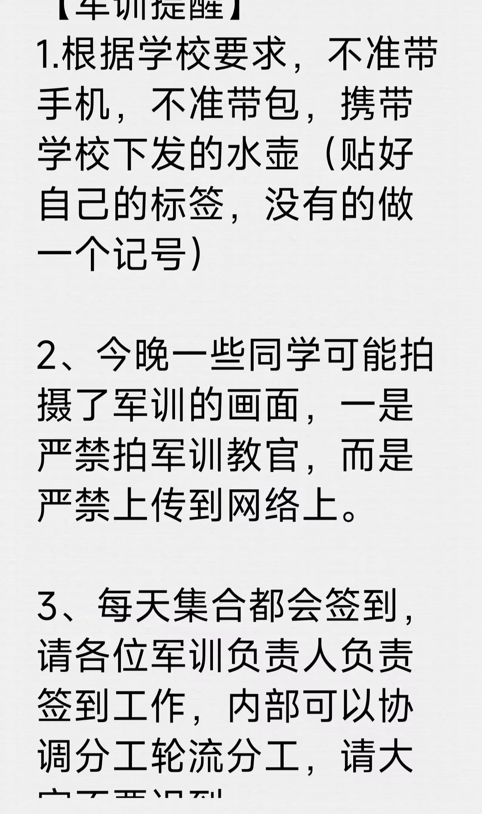

Journal · 2024-09-02
湖北省武汉市
“熊学理论”第58条：生死有命，富贵在天。
汪振洋 : 不带手机迷路了怎么办
2024年9月2日 23:05
柴江赣北 回复汪振洋 : 重点在第2条规矩
2024年9月2日 23:06
"Bear Theory," Article 58: life and death are fated; wealth and rank lie with Heaven.
汪振洋 : What if you get lost without your phone?
2024年9月2日 23:05
柴江赣北 回复汪振洋 : The key point is rule number two.
2024年9月2日 23:06
« Théorie de l'Ours », article 58 : la vie et la mort sont affaire de destin, la richesse et les honneurs reposent au Ciel.
汪振洋 : Et si tu te perds sans ton téléphone ?
2024年9月2日 23:05
柴江赣北 回复汪振洋 : L'essentiel, c'est la deuxième règle.
2024年9月2日 23:06
„Bären-Theorie“, Artikel 58: Leben und Tod sind Schicksal, Wohlstand und Ehre liegen im Himmel.
汪振洋 : Was, wenn du ohne Handy verloren gehst?
2024年9月2日 23:05
柴江赣北 回复汪振洋 : Der springende Punkt ist Regel Nummer zwei.
2024年9月2日 23:06
